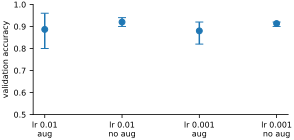
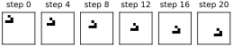

The best way to finish learning deep learning is to apply it to something you care about. This appendix is a plan for a first project: a classifier for your own images, trained with the recipe of Chapter 16, tested with honest experiments, and presented to other people. It grew out of the final project of the author’s Mathematics of Data Science course, where students have used it to sort oranges by quality and to tell bats from bugs.
Warming up
Before starting, check that you can do each of these without looking back. Each is a few lines of code from an earlier chapter.
Load MNIST and draw a montage of the first 36 digits (Chapter 8).
Score MNIST with a random matrix, then improve it by random search with a population to at least 75 percent on the test set (Chapter 10). Hill climbing alone reached about 67.
Read a color photograph from a file or URL, resize it, and draw a grayscale copy (Chapter 7).
Correlate the grayscale image with ten random kernels and draw each kernel beside its feature map (Chapter 13).
Write up what you did in a short Markdown file with your figures, and post it on GitHub. (Markdown is plain text with a few marks for formatting, such as
#at the start of a heading; GitHub is a free website for sharing code, and shows Markdown files as formatted pages. Its own guides take a few minutes to follow.)
Choosing a problem
Choose something you can photograph or download in quantity, where the answer is a category: ripe or unripe, healthy leaf or diseased, one bird species or another. Two to five classes is plenty. A hundred images of each class is enough to start, thanks to transfer learning. Ask two questions before you collect anything. Would a person be able to tell the classes apart from the image alone? And does anything other than the class differ between your folders, such as the background, the lighting or the camera? The mistakes of the ants-and-bees network in Chapter 16 suggest it partly learned the background. Yours will, if you let it.
Put the images in one folder per class, exactly as in the ants-and-bees data, so that ImageFolder can read them. Keep a separate test folder that you do not look at until the very end.
data_dir = 'data/hymenoptera_data' # replace with your own folder
for split in ['train', 'val']:
counts = {name: len(os.listdir(f'{data_dir}/{split}/{name}'))
for name in sorted(os.listdir(f'{data_dir}/{split}'))}
print(split, counts)train {'ants': 124, 'bees': 121}
val {'ants': 70, 'bees': 83}In the ants-and-bees data the folder called val plays the part of the test folder, exactly as in Chapter 16; validation images are taken from train. (The code downloads the data first, as in that chapter.)
Experiments, done fairly
Your first model will work, and then the temptation is to try things: a different learning rate, more augmentation, another architecture. The trouble is that every training run is partly luck. The random order of the batches and the random crops change the result, and so does which images end up in the validation set. Put everything that defines a run into one function, with the settings as arguments and a seed for the luck. Two details matter. The validation split is fixed with a generator of its own, so that every run is scored on the same 50 photographs; and the function reports the accuracy after the last epoch, not the best of all epochs, because picking the best of several noisy scores makes every setting look better than it is. evaluate is the helper of Chapter 16.
normalize = transforms.Normalize(mean=[0.485, 0.456, 0.406],
std=[0.229, 0.224, 0.225])
val_tf = transforms.Compose([transforms.Resize(256),
transforms.CenterCrop(224),
transforms.ToTensor(), normalize])
train_tf = transforms.Compose([transforms.RandomResizedCrop(224),
transforms.RandomHorizontalFlip(),
transforms.ToTensor(), normalize])def run_experiment(lr=0.001, batch_size=16, augment=True, epochs=5,
seed=0):
train_all = ImageFolder(f'{data_dir}/train',
train_tf if augment else val_tf)
val_all = ImageFolder(f'{data_dir}/train', val_tf)
g = torch.Generator().manual_seed(0) # the same split every run
split = torch.randperm(len(train_all), generator=g).tolist()
torch.manual_seed(seed) # the luck that varies
train_loader = DataLoader(Subset(train_all, split[50:]),
batch_size=batch_size, shuffle=True)
val_loader = DataLoader(Subset(val_all, split[:50]), batch_size=64)
net = alexnet(weights=AlexNet_Weights.DEFAULT)
net.requires_grad_(False)
net.classifier[6] = nn.Linear(4096, len(train_all.classes))
net = net.to(device)
head = net.classifier[6].parameters()
optimizer = torch.optim.SGD(head, lr=lr, momentum=0.9)
for epoch in range(epochs):
net.train()
for x, y in train_loader:
loss = nn.functional.cross_entropy(net(x.to(device)),
y.to(device))
optimizer.zero_grad()
loss.backward()
optimizer.step()
return evaluate(net, val_loader) # after the last epoch
print(run_experiment())0.9
Now an experiment is a loop. Change one thing at a time, repeat every setting with several seeds, and write the results to a file as you go so that nothing is lost:
import itertools
import csv
grid = {'lr': [0.01, 0.001], 'augment': [True, False]}
seeds = [0, 1, 2]
rows = []
for lr, augment in itertools.product(grid['lr'], grid['augment']):
accs = [run_experiment(lr=lr, augment=augment, seed=s)
for s in seeds]
rows.append({'lr': lr, 'augment': augment,
'mean': np.mean(accs), 'min': min(accs),
'max': max(accs)})
print(f'lr {lr:<6} augment {augment!s:5} '
f'{np.mean(accs):.3f} ({min(accs):.2f} to {max(accs):.2f})')
with open('data/experiments.csv', 'w', newline='') as f:
writer = csv.DictWriter(f, fieldnames=rows[0].keys())
writer.writeheader()
writer.writerows(rows)lr 0.01 augment True 0.887 (0.80 to 0.96) lr 0.01 augment False 0.920 (0.90 to 0.94) lr 0.001 augment True 0.880 (0.82 to 0.92) lr 0.001 augment False 0.913 (0.90 to 0.92)
Then draw the results with their spread (Figure A.1).
labels = [f"lr {r['lr']}\n{'aug' if r['augment'] else 'no aug'}"
for r in rows]
means = np.array([r['mean'] for r in rows])
low = means - [r['min'] for r in rows]
high = [r['max'] for r in rows] - means
plt.figure(figsize=(4.6, 2.0))
plt.errorbar(labels, means, yerr=[low, high], fmt='o', capsize=4)
plt.ylim(0.5, 1.0)
plt.ylabel('validation accuracy')
plt.show()
Look at the whiskers before the dots. Three runs of the same setting, learning rate 0.01 with augmentation, scored anywhere from 80 to 96 percent. The differences between settings are a few points, much smaller than that. With 50 validation images, one image is two percentage points, so a “2 percent improvement” is a single photograph. If anything, augmentation looks slightly worse here, which would make sense after only five epochs, since randomly cropped photographs are harder to learn quickly; but these numbers cannot tell. On this data, none of these choices clearly matters. That is a real finding, and a common one. Had we run each setting once, we would have declared a winner by luck. The square-root law of Chapter 9 says what to do about it: to halve the noise in an average, use four times as many runs or four times as many validation images.
Here are experiments worth running on your own data:
Train only the last layer, fine-tune everything, and train from scratch, as in Chapter 16.
Compare two learning rates a factor of ten apart, and two batch sizes such as 16 and 64.
Train with augmentation and without it.
Replace AlexNet with a newer network from
torchvision.models, such asresnet18. (Its last layer is calledfc, notclassifier[6], and has 512 inputs, not 4,096:net.fc = nn.Linear(512, len(classes)).)Use random features instead of trained ones, as in Chapter 17, as a baseline that any trained model should beat.
Experiment-tracking services such as Weights & Biases record every run’s settings and curves automatically and draw the comparison plots for you. A CSV file and a plotting script do the same job for a small project.
Only when you have chosen your final settings do you run the model once on the test folder. That number is the one you report.
A second project: learning a law of nature
Not every project needs a camera. Here is one that runs in seconds and asks a real question: can a network discover the rule of a world just by watching it? In Chapter 13 we gave a convolution the rule of Conway’s Game of Life. Now we hide the rule and show a network only pairs of worlds, before and after one step, and ask it to work out what happens next. The helpers below compute the true next step, as in Chapter 13 but with PyTorch, and make random worlds, each with its own density of living cells so that the network sees crowded and empty worlds alike:
import torch.nn.functional as F
neighbors = torch.ones(1, 1, 3, 3, device=device)
neighbors[0, 0, 1, 1] = 0
def wrap(x): # join opposite edges of the grid
return F.pad(x, (1, 1, 1, 1), mode='circular')
def life_step(world): # the true rule, from Chapter 13
n = F.conv2d(wrap(world), neighbors)
return ((n == 3) | ((world == 1) & (n == 2))).float()
def random_worlds(k, size=32): # each with its own density
density = 0.1 + 0.6 * torch.rand(k, 1, 1, 1, device=device)
return (torch.rand(k, 1, size, size, device=device) < density).float()The network has the shape the rule itself suggests. A convolution with 8 channels looks at each cell’s neighborhood, a ReLU, and then a convolution, which mixes the 8 channels at each cell without looking at the neighbors, produces one score per cell: positive for alive, negative for dead.
torch.manual_seed(0)
w = [(0.5 * torch.randn(8, 1, 3, 3, device=device)).requires_grad_(),
torch.zeros(8, device=device, requires_grad=True),
(0.5 * torch.randn(1, 8, 1, 1, device=device)).requires_grad_(),
torch.zeros(1, device=device, requires_grad=True)]
def life_net(x, w):
h = F.relu(F.conv2d(wrap(x), w[0], w[1])) # 8 detectors, 3x3 each
return F.conv2d(h, w[2], w[3]) # mixed into one scoreEach training step makes 64 fresh random worlds, so the network never sees the same example twice:
optimizer = torch.optim.Adam(w, lr=0.01)
for step in range(3001):
before = random_worlds(64)
after = life_step(before)
loss = F.binary_cross_entropy_with_logits(life_net(before, w), after)
optimizer.zero_grad()
loss.backward()
optimizer.step()
if step % 1000 == 0:
print(step, f'{loss.item():.5f}')0 0.59461 1000 0.00328 2000 0.00069 3000 0.00029
Now the test, on 500 worlds it has never seen:
with torch.no_grad():
before = random_worlds(500) # worlds it has never seen
guess = (life_net(before, w) > 0).float()
wrong = (guess != life_step(before)).sum().item()
print(f'{wrong} wrong cells out of {before.numel():,}')0 wrong cells out of 512,000
Not one mistake in half a million cells. But is that the rule itself, or only a very good imitation of it? Here we can do better than any number of random tests. A cell’s next state depends only on its own neighborhood, and there are just of those, so we can try every one. Each neighborhood, wrapped around on itself, is a whole world, and the network’s answer for its middle cell is its verdict:
codes = torch.arange(512, device=device)
bits = (codes[:, None] >> torch.arange(9, device=device)) & 1
patches = bits.float().view(512, 1, 3, 3) # every 3x3 neighborhood
with torch.no_grad():
guess = (life_net(patches, w) > 0).float()[:, 0, 1, 1]
truth = life_step(patches)[:, 0, 1, 1] # the middle cell's fate
print(f'{(guess != truth).sum().item()} wrong out of {len(codes)}')0 wrong out of 512
None wrong: the network has learned the rule exactly, from examples alone, in a few seconds. (The half million random cells had almost certainly covered every neighborhood hundreds of times, which is why they found no mistakes either; testing them all says so for certain.) A network that has the rule can run any pattern, so its glider should walk (Figure A.2).
world = torch.zeros(1, 1, 12, 12, device=device)
world[0, 0, 1, 2] = world[0, 0, 2, 3] = 1
world[0, 0, 3, 1] = world[0, 0, 3, 2] = world[0, 0, 3, 3] = 1
plt.figure(figsize=(4.6, 1.0))
for i in range(6):
plt.subplot(1, 6, i + 1)
plt.imshow(world[0, 0].cpu(), cmap='gray_r', vmin=0, vmax=1)
plt.title(f'step {4 * i}')
plt.xticks([])
plt.yticks([])
plt.gca().spines[:].set_visible(True)
for _ in range(4): # the network's rule, not
with torch.no_grad(): # Conway's
world = (life_net(world, w) > 0).float()
plt.show()
It walks. Twenty steps of the network’s own rule carry the glider five cells down and to the right, exactly as Conway’s rule would. From here the project is yours. What is the smallest number of channels that can learn the rule? Can a network learn HighLife, or a rule you invent, as easily? Can it learn the drumhead of Chapter 13, a rule with real numbers instead of alive and dead? Learning the laws of a world from watching it is one of the open frontiers of machine learning, and this is a small corner of it you can explore on a laptop.
Telling others
A result nobody hears about does not exist. Two forms matter most. The first is a notebook that runs from top to bottom and reproduces every number you report, so that someone else can check your work and build on it. The second is a short write-up: the problem and why it matters, what the data look like, the method, the experiments with their error bars, and what you would try next. Keeping it to a page or two forces you to decide what matters.
In the course this appendix comes from, students also present each project as a slide deck, a public web page, a conference-style poster and a short video pitch. Each is the same story told for a different audience, and each is worth trying once.
Whatever the form, report what did not work as well as what did. A table of experiments in which most choices made no difference, like Figure A.1, is more useful to the next person than a single lucky number.